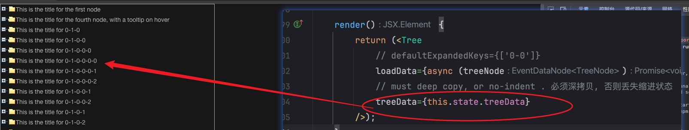

2024-06-28
rc-tree
修改于: 2024-06-28npm地址 https://www.npmjs.com/package/rc-tree
安装:
npm i rc-tree
效果
简单使用
import {Component} from "react";
import Tree from 'rc-tree'
import "rc-tree/assets/index.css"
export class CTree extends Component<any, any>{
render() {
return (<Tree
defaultExpandedKeys={['0-0']}
treeData={[
{
title: 'This is the title for the first node',
key: '0-0',
children: [
{
key: '0-0-0',
isLeaf: true,
title: 'This is the title for the second node, with a tooltip on hover'
},
{
key: '0-0-1',
isLeaf: true,
title: 'This is the title for the third node, with a tooltip on hover'
}
]
},
{
key: '0-1',
isLeaf: true,
title: 'This is the title for the fourth node, with a tooltip on hover'
}
]}
/>);
}
}
效果2
此组件的问题
一是不能仅加载某个子节点, 另外就是, 传给组件的数据, 新数据最好是深拷贝一下, 否则, 渲染出来的新数据会丢失缩进.
丢失缩进示例

正常情况的数据
源码
import {Component, createRef} from "react";
import Tree from 'rc-tree'
import "rc-tree/assets/index.css"
import {DataNode, EventDataNode} from "rc-tree/es/interface";
const initData = [
{
title: 'This is the title for the first node',
key: '0-0',
children: [
{
key: '0-0-0',
isLeaf: true,
title: 'This is the title for the second node, with a tooltip on hover'
},
{
key: '0-0-1',
isLeaf: true,
title: 'This is the title for the third node, with a tooltip on hover'
}
]
},
{
key: '0-1',
isLeaf: false,
title: 'This is the title for the fourth node, with a tooltip on hover'
}
]
interface TreeNode{
key: string,
title: string,
isLeaf?: boolean,
children?: TreeNode[]
}
class TreeDataCacheHelper {
protected _initData: TreeNode[] = []
protected keyNodeMap: {[key: string]: TreeNode} = {}
protected initNodeMap(data: TreeNode[]){
for (const one of data) {
this.keyNodeMap[one.key] = one
if (one.children) this.initNodeMap(one.children)
}
}
constructor(data: TreeNode[]) {
this.reInitData(data)
}
reInitData(data: TreeNode[]) {
this._initData = data
this.initNodeMap(this._initData)
}
get value(): TreeNode[]{
return this._initData
}
setChildByKey(key: string | any, value: TreeNode[]) {
const t = this.keyNodeMap?.[key]
if (t) {
t.children = value
this.initNodeMap(t.children)
} else {
console.log(`not find tree for ${key}`)
}
}
}
export class CTree extends Component<any, any>{
protected proxyData = new TreeDataCacheHelper(initData)
state = {
treeData: this.proxyData.value
}
protected loadData(treeNode: EventDataNode<DataNode>){
console.log("load data", treeNode)
const startKey = treeNode.key
const ret = []
let i = 0
while (i < 3){
ret.push({
key: startKey+`-${i}`,
isLeaf: false,
title: `This is the title for ${startKey}-${i}`,
})
i += 1
}
this.proxyData.setChildByKey(treeNode.key, ret)
this.setState({treeData: this.proxyData.value})
// return ret
}
render() {
return (<Tree
// defaultExpandedKeys={['0-0']}
loadData={async (treeNode)=> this.loadData(treeNode)}
// must deep copy, or no-indent . 必须深拷贝, 否则丢失缩进状态
treeData={[...this.state.treeData]}
/>);
}
}
深拷贝太耗时了...
虚拟树支持
- 关键字
- rc-tree大量数据的加载
- rc-tree虚拟树
主要是设置 virtual, height, itemHeight 这三个属性, 否则不生效, 比较坑的文档没有提到这一点, 是搜 issue https://github.com/react-component/tree/issues/659 才知道的.
代码
render() {
return (<div
ref={this.refTree}
>
<Tree
// defaultExpandedKeys={['0-0']}
loadData={async (treeNode)=> this.loadData(treeNode)}
// must deep copy, or no-indent . 必须深拷贝, 否则丢失缩进状态 , 但是深拷贝又太耗时了...
treeData={[...this.state.treeData]}
// treeData={this.state.treeData}
virtual={true}
height={200}
itemHeight={20}
/>
</div>);
}
树内容截断
出现的场景: 祖先容器是flex布局, 父布局支持滚动, 标题 title 自定义了高度为 14px.
后续使用Mac复现了一下, 没成功复现. 不过发现默认标题高度是 24px, 调大为 24 后有所改善
后面发现是父容器的实际高度比获取的高度要小那么一点, 猜测是 padding 等其他边距的影响, 在设置树的高度时, 稍微减去 5px 左右即可. 另外组件底层实现方式, 使用的是 24px 计算的滚动高度, 建议使用此高度.